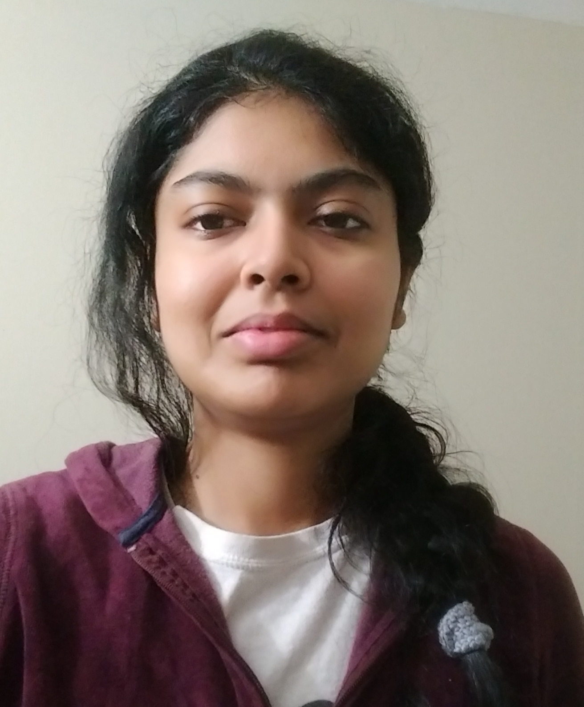

Organizing Committee

Manas Gaur
University of Maryland Baltimore County, USA
(Primary Contact)
Email: manas@umbc.edu

Efthymia Tsamoura
Samsung Research, Cambridge, UK
Email: efi.tsamoura@samsung.com

Edward Raff
Booz Allen Hamilton, USA
Email: Raff_Edward@bah.com

Nikhita Vedula
Amazon, USA
Email: veduln@amazon.com

Srinivasan Parthasarathy
Ohio State University, USA
Email: srini@cse.ohio-state.edu